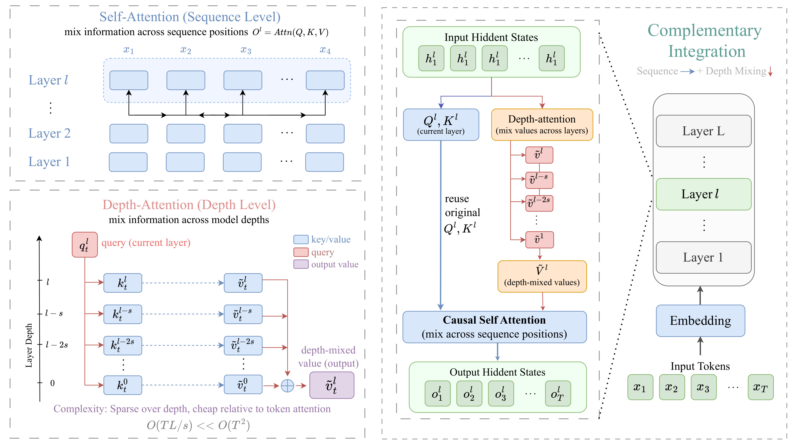
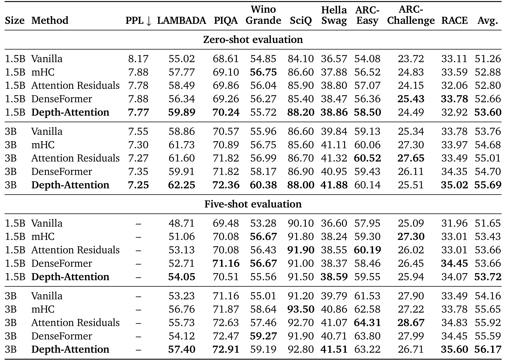
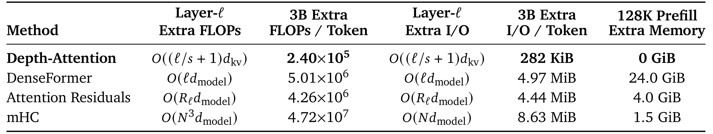
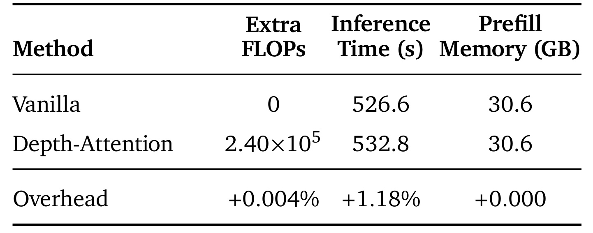
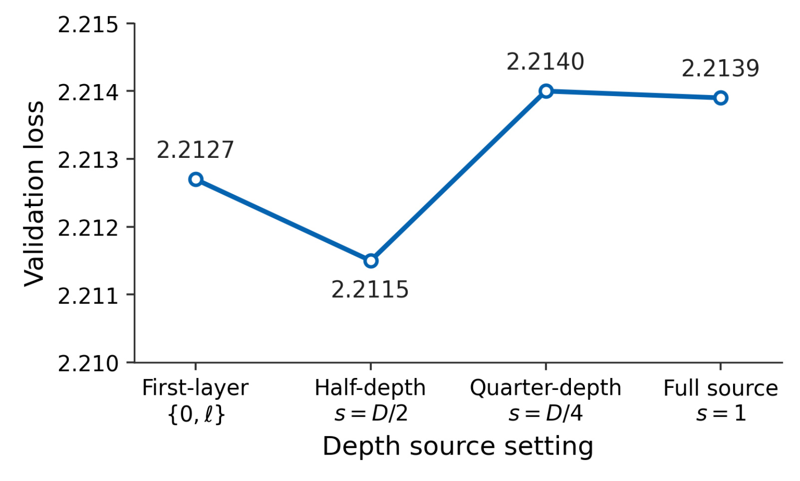

论文入口：arXiv:2606.05014。这篇工作来自上海交通大学 LUMIA Lab 等机构，核心问题是：Transformer 已经能在序列维度上用 self-attention 做内容选择，但在深度维度上仍主要依赖残差流逐层相加。Depth-Attention 把跨层选择放回 attention 模块内部，让当前层 query 在同一 token 位置沿深度读取浅层 key，并把浅层已经混合过的 value 合入当前层 value，再交给标准 causal self-attention 使用。
1. 背景和问题
标准 decoder block 在序列维度上很灵活：每个 token 的 query 可以在 causal mask 允许的范围内对历史 token 的 key/value 加权，因此模型能够根据当前语境从长上下文里挑选信息。深度维度则不同。一个层得到的输出通常只是加到 residual stream 里，下一层接收的是已经合并后的 hidden state，而不是一组可按内容重新选择的历史层表示。这样做训练稳定、实现简单，却带来一个结构性限制：当第 ℓ 层想要使用第 3 层的某个局部语义、第 12 层的某种句法状态，或者第 30 层附近形成的中层抽象时，它不能像序列注意力那样对这些来源做显式选择，只能从被残差相加压缩后的单一 hidden state 中间接恢复。
近年的 cross-layer 方法正是在修补这个深度瓶颈。DenseFormer 让后层聚合较早层输出，Hyper-Connections 或 mHC 把单条残差流扩展成多条交互流，Attention Residuals 则用 attention over previous layer outputs 替代固定残差累积。这些方法说明中间层表示确实有额外价值，但它们大多操作 hidden states，也就是注意力模块外部的完整隐藏表示。对训练阶段而言，这会增加 activation 读写和通信；对自回归推理而言，问题更尖锐，因为模型本来已经必须为每层保留 KV-cache，如果 cross-layer 机制还要求保留额外 hidden-state 历史，就会在 cache 之外增加新的持久状态。
这篇论文把问题放在现代 LLM 的缓存背景下重新定义。GQA 和 MLA 等结构正在压缩 key/value cache，让每个 token 的缓存从多头全量 K/V 变成更小的共享或 latent 形式。KV-cache 被压缩以后，任何额外 hidden-state state 的相对成本就更显眼：如果一个方法为了跨层复用而保留宽 residual stream 或多层 hidden states，它可能在理论 FLOPs 上看起来可控，却在长上下文 prefill 和服务端 memory budget 中变得昂贵。Depth-Attention 的出发点是：跨层信息能不能只使用已经存在于注意力模块中的 Q、K、V，不再开辟独立的 hidden-state 存储？
作者的答案是把“跨层选择”改写成“同一位置的深度注意力”。它不是让第 ℓ 层去看所有 token 的早期 hidden states，而是对固定 token 位置 t，让当前层 query q_t^ℓ 沿层号 j 去匹配同一位置的 k_t^j，再用得到的深度权重混合对应的 value。这个设计有两个重要边界。第一，它只发生在同一 token 位置，不改变 causal self-attention 的时间方向，也不让 token 越过序列 mask 读取未来信息。第二，它混合的是 value state，而不是完整 hidden state；混合结果直接替换当前层 V-cache slot 中的 value，所以持久推理状态仍然是标准 KV-cache 的形状。
因此，这篇论文的价值不是单纯“又加了一个跨层连接”，而是把跨层连接嵌入到 attention 原生的 key/value 语义里。它试图同时满足三件事：让后层能按内容选择浅层信息；不增加参数；不在推理时引入 KV-cache 之外的持久状态。对大模型工程来说，第三点尤其关键，因为长上下文、批量推理和 GQA/MLA 已经把 cache 管理变成主要成本之一。如果 cross-layer 方法要进入真实 decoder，它必须解释自己与 cache 的关系，而不只是报告短上下文训练 loss。
更具体地说，Depth-Attention 关注的是“表示是否还能被后层辨认出来”。在普通残差路径中，第 j 层输出经过若干层 attention、MLP、normalization 和 residual addition 后，到第 ℓ 层时已经变成一个聚合状态。这个聚合状态可能包含早期信息，但缺少一个显式地址，让第 ℓ 层说“我现在只想读取第 j 层在位置 t 的 value”。Hidden-state cross-layer 方法通过保存更多中间表示来提供地址，但代价是状态空间变宽或变多。Depth-Attention 的关键观察是：每层 attention 本来就会生成同位置的 key/value，key 可以作为选择地址，value 可以作为被读取内容；如果后层只需要同一 token 在不同深度的演化历史，那么没有必要把完整 hidden state 当作唯一可复用对象。
这也解释了论文标题中的 Cross-Layer Value Mixing。作者没有试图让后层直接混合 attention scores，也没有在 residual branch 上学习一组层权重，而是把 value state 当成跨层信息的载体。value 在 self-attention 里本来就是“被读取后用于更新 token 表示”的内容通道；把浅层 value 先按当前 query 内容混合进去，相当于在每层序列注意力之前给 value 做一次 depth-conditioned enrichment。这样，跨层选择不是对最终 hidden state 的事后补丁，而是成为下一次 token-level attention 可以自然读取的输入。
再从大模型服务的角度看，论文抓住了一个容易在算法论文里被低估的约束：跨层复用如果要求长期保存完整隐藏状态，那么它的成本会跟上下文长度、层数和隐藏维度一起增长；而生产环境里的瓶颈往往不是单个算子的理论复杂度，而是显存里能同时容纳多少请求、多少上下文和多少缓存。Depth-Attention 把可复用对象限制在每层已经存在的键值状态中，等于承认了一个现实前提：服务端系统愿意为标准键值缓存付费，但不一定愿意再为一套平行的跨层隐藏状态付费。这个前提使得方法的评估不能只看验证集 loss，也必须看长上下文预填充内存、推理时间和训练墙钟。
论文的问题定义还有一个隐含好处：它把跨层复用从全局层级控制变成了位置级控制。固定层权重或全局残差混合通常对所有 token 使用同一套深度偏好，而语言模型里的 token 需求并不相同。一个标点、一个实体名、一个数学符号、一个段落主题词，对浅层和深层表示的依赖可能完全不同。同一位置的深度注意力允许每个位置根据当前 query 决定是否需要浅层 value，这比“第几层应该整体多接一点前层输出”更细粒度。虽然论文没有逐 token 展示全部案例，但这种位置级选择能力是它区别于许多固定跨层聚合方法的理论优势。
2. 方法
2.1 固定位置的深度注意力
Depth-Attention 的第一步是把注意力的轴从 sequence 维度临时旋转到 depth 维度。普通 self-attention 对一个 target token，会把 q_t^ℓ 与同层所有可见位置的 k_1^ℓ 到 k_t^ℓ 做匹配；Depth-Attention 则在进入这一步之前，先对同一个位置 t，把 q_t^ℓ 与若干浅层同位置 key 进行匹配。也就是说，它关注的不是“当前 token 应该看前面哪个 token”，而是“当前 token 在进入第 ℓ 层序列注意力之前，应该从哪些早期层的 value 状态中取信息”。这个选择仍然是内容相关的，因为权重由当前 query 与来源 key 的点积决定，而不是固定层权重。
论文先定义每一层的 query、key、value 状态：
符号解释：T 是序列长度，d 是单个 attention head 或 KV head 的维度，q_t^\ell、k_t^\ell、v_t^\ell 分别表示第 ℓ 层第 t 个位置的 query、key、value。这个定义看似普通，但它为后面强调“同形替换”做准备：混合后的 \tilde{V}^\ell 仍然属于 \mathbb{R}^{T \times d}，因此可以放回原来的 value slot。
对于固定位置 t 和目标层 ℓ，深度注意力权重写成：
符号解释：j 是 depth source 的层号，softmax 只在深度来源集合上归一化；分母 \sqrt{d} 与标准 scaled dot-product attention 一致，用来控制点积尺度。关键细节是 key 的位置索引仍为 t，而不是历史 token 位置。这样，Depth-Attention 选择的是同一个 token 在不同层中的 value 演化，而不是在序列上额外开一个读取通道。

图 1 把论文的核心类比画得很清楚：左上是常规 self-attention，它沿 token 序列混合信息；左下是 Depth-Attention，它沿模型深度混合信息。右侧集成图说明 depth-attention 先把 value 变成 depth-mixed values，然后标准 causal self-attention 再跨序列读取这些 values。这个顺序很重要：query 和 key 仍来自当前层，causal mask 不变，改变的是 self-attention 最终读取的 V。换句话说，Depth-Attention 不把 Transformer block 改造成一个额外的 hidden-state aggregator，而是把 value cache 里的每个 value 变成“已经带有浅层选择结果”的 value。
2.2 值状态递归混合与自注意力接入
得到深度权重之后，Depth-Attention 构造 depth-mixed value。论文的公式不是简单把所有历史层原始 value 加权平均，而是让早期层贡献它们已经混合过的值：
符号解释：v_t^\ell 是当前层原始 value，\tilde{v}_t^j 是第 j 层已经得到的 depth-mixed value。这个递归形式意味着浅层信息可以被逐层向上传播，而不是每一层都只能重新读取原始浅层 value。当前层保留自身 value 的直接项，同时用权重选择历史 depth-mixed value；如果模型认为当前层状态足够，它可以把权重集中在 j=ℓ；如果浅层特征仍有用，它可以给较早层非零权重。
随后，标准 causal self-attention 读取的 value 被替换为混合后的 value：
符号解释：O^\ell 是第 ℓ 层 attention 输出；Q^\ell 与 K^\ell 不变，mask 也不变，只有 V^\ell 被 \tilde{V}^\ell 替代。因此，Depth-Attention 不是额外插入一个和 attention 平级的大模块，而是在 attention 内部改变 value 的来源。这个位置选择解释了为什么它可以保持参数量不变：权重计算复用已有 query/key 投影，value 也复用已有 value 投影，只是在进入 causal attention 前做一个小规模 depth-wise weighted sum。
这个递归 value mixing 还有一个容易忽略的语义好处。传统 residual stream 会把每层输出相加，后层只能看到“已经混在一起”的 hidden state；Depth-Attention 保留了以层为单位的 key/value 线索，使得后层可以用当前 query 内容决定应该偏向哪个 depth source。它不是把所有浅层都长期暴露给每个 token，而是在每个 token、每个 head 或 KV-head resolution 上动态路由。对于语言模型，这种路由可能对应不同层级的信息：浅层可能保存局部 token/词形，中层保存短语或句法结构，深层保存任务相关语义。论文没有声称这些语义边界被完全解释，但 Figure 3 的权重可视化显示模型确实给非当前层来源分配质量，说明它没有退化成 vanilla attention。
从实现角度看，Depth-Attention 的位置也避免了修改 MLP 或 residual branch。一个 decoder layer 仍然可以维持原来的 attention-MLP block 结构；区别是在 attention 计算 value 之后、causal attention 汇聚之前，插入 depth-wise attention over source layers。训练时这需要保留用于反向传播的中间激活，但推理时持久保留的仍然只是 K-cache 和被替换后的 V-cache。这个边界让方法更像一个 attention kernel 内的 value preprocessing，而不是需要系统级新增状态管理的跨层记忆模块。
2.3 稀疏深度源与 GQA 分组
如果每层都看所有早期层，Depth-Attention 在层数 L 较大时仍会增加 activation memory 和跨设备通信。论文因此采用稀疏深度源。给定 stride s，第 ℓ 层的来源集合可以写成：
符号解释：\mathcal{D}_\ell 是第 ℓ 层可见的 depth source set，s 是层间步长。默认设置是 s=L/2，在 48 层 Qwen3-style 主实验中即 s=24。这样每层通常只访问当前层和少量较浅层，避免来源数量随层号线性增长到太大。论文的 Figure 4 消融显示，half-depth stride 在 500M 模型上优于 first-layer-only、quarter-depth 和 full-source，说明更密集的来源并不必然更好，可能会带来冗余或干扰。
GQA 适配是另一个工程细节。现代 decoder 常让多个 query heads 共享一个 KV head，从而降低 KV-cache 尺寸。如果 Depth-Attention 按 full query head resolution 做深度混合，就会与 GQA 的缓存压缩方向相冲突。作者的处理是对每组 g 个 query heads 求平均，得到与 KV head 对齐的 query 表示，然后在 key-value head resolution 上执行 depth-wise attention。这样，Depth-Attention 的额外计算和额外读写都跟 d_kv 相关，而不是跟完整 hidden dimension d_model 相关。
论文在附录中把 Depth-Attention 的额外 FLOPs 写成：
符号解释：M_\ell 是第 ℓ 层来源集合 \mathcal{D}_\ell 的大小；4d_{kv} 来自两部分主要操作：query 与 source keys 的点积约 2M_\ell d_{kv} FLOPs，以及深度权重对 source values 的加权求和约 2M_\ell d_{kv} FLOPs。对 3B Qwen3-style 配置，L=48、d_{kv}=512，按照作者的 stride schedule，所有层的来源数量求和为 117，所以每 token 总额外 FLOPs 为 2.40×10^5。相对 3B dense forward 的约 6×10^9 FLOPs，这就是 Table 4 中 +0.004% 的来源。
额外 activation I/O 估算为：
符号解释：b=2 表示 FP16 每个 scalar 两字节；2\sum M_\ell 对应读取 source keys 和 source values；额外的 L 对应写回每层 mixed value。这个公式解释了为什么 Depth-Attention 的理论 I/O 远小于 DenseFormer 等 hidden-state 方法：它读写的是 d_kv 维的 K/V states，而不是 d_model 维的完整 hidden states。
2.4 缓存语义和训练推理差异
Depth-Attention 最值得注意的地方是 cache 语义。标准 decoder 推理时，第 ℓ 层会把当前 token 的 key 和 value 写入该层 KV-cache，后续 token 在该层 causal self-attention 中读取它们。Depth-Attention 不额外保存原始 value 与混合 value 两份状态，而是把 \tilde{V}^\ell 存入原来的 V-cache slot，替代 V^\ell。由于二者形状相同，cache 的层数、token 数、KV-head 数和 head dimension 都不变。下一 token 到来时，它读取到的是经过深度混合后的 value，这既服务于本层的序列注意力，也可作为后续更深层的 depth source。
这个设计和 hidden-state cross-layer 方法形成对比。DenseFormer 这类方法如果要在推理时让后层访问早期 hidden states，就必须保留额外的 hidden-state 历史；Attention Residuals 或 mHC 也需要在残差流或多流状态上维护额外表示。Depth-Attention 的主张则是：持久推理状态不增加，因为跨层信息已经被折叠进每层的 V-cache 位置。注意，这不等于训练完全无开销。训练中为了反向传播，depth-wise attention 的中间权重、source reads 和 mixed values 仍会带来 wall-clock 增量；Table 3 显示参考 PyTorch 实现下 1.5B/3B 训练分别有 +9.1% 和 +11.2% per-step overhead。但这和“推理持久状态是否增加”是两个不同问题。
推理阶段还要区分 prefill 与 decode。prefill 长上下文时，标准模型要为每层每个 token 建立 K/V；Depth-Attention 在计算每层 value 时会沿稀疏 depth source 做额外小 attention，但完成后写回的 cache 规模不变。decode 单 token 时，额外计算与层数和来源集合有关，却不随历史序列长度 T 像 self-attention 的 prefill 矩阵那样增长。论文把这个性质概括为：depth 维大小远小于 sequence length，且来源集合稀疏，所以额外算术成本相对于 token-level attention 很小。
因此，方法的工程读法可以分成三层。第一层是数学操作：用 q_t^\ell 对同位置 k_t^j 做 softmax，得到 \alpha_t^{\ell,j}。第二层是状态变换：用权重把 v_t^\ell 和 \tilde{v}_t^j 混成 \tilde{v}_t^\ell，再让 CausalAttn 读取它。第三层是系统约束：\tilde{v} 直接占用原 V-cache slot，不新增持久 hidden-state buffer。只有这三层同时成立，论文的“cross-layer value mixing without extra inference state”才成立；如果把它简化成“跨层 attention”，就会漏掉它与 KV-cache 的关键绑定。
还有一个细节是“当前层 query”承担了双重角色。它先用于 depth-wise selection，再用于 sequence-wise causal attention。由于这两个选择共享 query，模型在同一个语义需求下先决定从哪些层取 value，再决定从哪些历史 token 取 value。若一个 head 当前需要低层局部模式，它可以在 depth 维给浅层 value 较高权重；若它需要当前位置的高层抽象，它可以保留当前层 value。随后同一个 head 再沿序列维度选择历史 token。这个顺序让 depth selection 成为 token attention 的前置内容整形，而不是一个独立的后处理模块。
递归使用 ilde{v}_t^j 而不是原始 v_t^j 也会改变信息传播路径。假设第 24 层读取第 1 层和第 24 层形成 ilde{v}^{24}，第 48 层再读取第 24 层时，它拿到的不是第 24 层单独产生的 value，而是已经包含更浅层信息的 mixed value。这样，稀疏 stride 仍然可以覆盖多段深度历史：每个 source value 本身已经是一段历史的压缩结果。这个设计让来源集合可以保持稀疏，同时不完全丢失更早层的贡献。它与 DenseFormer 的差别在于，DenseFormer 直接聚合大量 hidden states，而 Depth-Attention 通过 value-cache slot 逐层递归传递已选择的信息。
从反向传播看，Depth-Attention 也给浅层 key/value 提供了新的梯度路径。浅层 key 不只服务本层序列 attention，也会影响后层对该层 value 的选择权重；浅层 mixed value 不只影响本层输出，也可能作为后层的 depth source 被再次读取。这意味着模型训练时可以学习“哪些层的表示应该被后层容易选中”。但这个路径仍受 stride 限制，所以它不是 dense all-to-all layer communication。工程上，如果模型采用 pipeline parallelism，stride 还关系到跨 stage 读取来源的频率；论文选择 s=L/2，除了实验上有效，也是在通信边界上更可控的折中。
需要强调的是，Depth-Attention 不改变 causal self-attention 的可见 token 集合。它在同一位置 t 沿 depth 做选择，因此不会因为读取浅层 value 而越过未来 token。所有跨 token 信息仍由后续 CausalAttn(Q^ℓ,K^ℓ, ilde{V}^ℓ) 在标准 causal mask 下完成。这一点对语言模型非常重要：方法增强的是当前位置 value 的层间信息，而不是放宽自回归因果约束。若实现中把 depth source 错写成不同 token 位置的 K/V，就会变成另一类机制，也会破坏论文的 cache 和因果语义。
最后，value-only 消融可以反向理解公式设计。若同时混合 key，后续序列注意力的匹配坐标也被历史层改写，query 与 key 的相似度空间会混入不同深度的投影语义；这可能让 temporal attention 的定位变差。只混 value 则更保守：key 仍表示当前层对历史 token 的寻址标准，value 则携带更丰富的跨层内容。论文的 Table 6 正是验证了这个保守选择，value-only 最优，key-only 反而不如 vanilla。这个结果让 Depth-Attention 的公式不只是为了省 cache，也有表达层面的依据。
还可以把公式二看成一个很小的“层内检索器”。检索库不是外部文档，也不是序列历史，而是同一 token 在若干层留下的键值状态。query 是检索条件，key 是层级地址，value 是被取回的信息。这个检索器的库大小由 M_ℓ 控制，通常远小于上下文长度 T，因此它不改变模型处理长序列时的主要复杂度形态。更重要的是，这个检索器每层、每位置都会重新运行，所以同一个浅层来源在不同 token 上可以被不同程度地使用。它不是把第 j 层永久提升到所有后层，而是给后层一个按内容读取第 j 层的通道。
如果把普通残差流记为 h^{ℓ+1}=h^ℓ+f_ℓ(h^ℓ)，那么早期层信息进入后层的方式是连续相加。Depth-Attention 没有取消这条路径，残差仍然存在；它增加的是 value 通道中的第二条路径。也就是说，hidden state 仍通过残差向上传播，value state 同时通过深度注意力被选择性重写。这样设计避免了和已有 Transformer block 的稳定训练机制正面冲突。它不需要重新定义每层输入输出的维度，不需要改变 MLP，不需要让所有后续层读取一个更宽的 residual tensor，只要求 attention 子模块在写入 value 前多做一次同位置深度混合。
公式三中的递归项也说明 Depth-Attention 不是简单跳连。若第 ℓ 层选择第 j 层，读取的是 ilde{v}_t^j，而 ilde{v}_t^j 已经可能包含第 j-s 层、第 j-2s 层的信息。这个递归压缩让稀疏来源集合有了层级摘要的性质。它类似在深度轴上建立一个可学习的 value summary，但 summary 的权重不是固定平均，而是由目标层当前 query 决定。因此，s=L/2 并不意味着第 48 层只能知道第 24 层和第 48 层的原始信息；第 24 层的 mixed value 可能已经携带更浅来源。这也是为什么过密的 full-source 未必更好：递归 mixed value 已经提供摘要，再暴露全部原始来源可能增加选择噪声。
在 GQA 场景下，平均同组 query 的处理看似小技巧，其实关系到方法是否能保持“缓存友好”。GQA 的核心是多个 query heads 共享较少的 key-value heads，如果 Depth-Attention 为每个 query head 单独做深度 value mixing，就会引入比实际 KV-cache 更细的状态粒度，既不经济，也可能让实现变得复杂。按组平均 query 后在 KV-head resolution 上做深度注意力，等于让深度选择的粒度与缓存粒度一致。这样每个共享 value head 得到一份 mixed value，后续仍可被该组 query heads 使用。论文的成本估算用 d_kv 而不是 d_model，正是建立在这个实现选择上。
训练和推理的差异还体现在“原始 value 是否可丢弃”。训练时为了梯度计算，框架可能仍会保留部分中间张量；推理时则可以把 ilde{V} 当成最终缓存内容。一个正确实现应当在每层计算完 depth-mixed value 后，将其作为该层后续 token 可见的 value，而不是在 cache 里额外开一列保存原始 value 供未来层读取。如果实现为了方便同时保存 V 和 ilde{V}，就会破坏论文关于不增加持久状态的主张。换言之，Depth-Attention 的算法定义和内存声明是绑定的，不能只复现公式而忽略 cache 写入语义。
还要注意，Depth-Attention 的额外计算发生在每个 token、每层的 value 更新处，不等于一次离线层权重预计算。权重依赖 q_t^ℓ，所以不同上下文、不同位置、不同推理步的深度权重都可能变化。这个动态性是性能收益的来源，也是实现优化的难点。若未来做 fused kernel，需要在不破坏动态 softmax 的前提下，把 source key/value 的读取、点积、权重归一化和 value 加权尽量靠近现有 attention 数据流。论文当前没有给出 fused 版本，因此实际训练开销仍然高于理论算术比例。
3. 实验结果
3.1 Qwen3-style 主结果
主实验使用 Qwen3-style decoder，在 1.5B 和 3B 两个规模上从头训练 32B tokens，数据为 The Pile，并在相同训练协议下比较 vanilla Transformer、mHC、Attention Residuals、DenseFormer 和 Depth-Attention。评测包含 Pile validation perplexity，以及 LAMBADA、PIQA、WinoGrande、SciQ、HellaSwag、ARC-Easy、ARC-Challenge、RACE 八个下游任务的 zero-shot 与 five-shot accuracy。这个设置的重点不是和公开 Qwen3 checkpoint 比能力，而是在近似 Qwen3 的架构族内做同训练预算、同数据、同模型规模的结构对比。

Table 1 显示 Depth-Attention 在两个规模上都取得最好的平均结果和最低 PPL。1.5B zero-shot 中，vanilla 的 PPL 为 8.17、Avg. 为 51.26，Depth-Attention 降到 7.77、Avg. 升到 53.60；3B zero-shot 中，vanilla 为 7.55/53.76，Depth-Attention 为 7.25/55.69。five-shot 下也类似：1.5B Avg. 从 51.65 到 53.72，3B Avg. 从 54.16 到 56.17。表中也能看到逐任务并非全部单点最优，例如 ARC-Challenge 或 RACE 某些设置下其他 baseline 可能更高，但在平均值和 PPL 两个汇总指标上，Depth-Attention 都排在最前。
和 mHC、Attention Residuals、DenseFormer 相比，Depth-Attention 的优势更有解释价值。它不是只超过 vanilla，而是在一组同样面向 cross-layer information flow 的 baseline 中胜出。3B zero-shot Avg. 分别是 mHC 54.68、Attention Residuals 55.01、DenseFormer 54.70、Depth-Attention 55.69；3B five-shot Avg. 分别是 55.65、55.92、55.59、56.17。差距不是巨大到能单独证明所有场景都优越，但足以说明 value-level depth mixing 至少没有因为只混 value、不混完整 hidden state 而损失表达能力。结合 PPL 下降，可以把它理解为：同位置跨层 value 选择给语言建模目标提供了更好的中间表示复用。
3.2 效率、缓存和持久状态
效率结果是这篇论文的第二条主线。作者同时报告理论开销、训练 wall-clock、推理时间和 prefill memory，原因是 cross-layer 方法常常在不同维度上有不同代价：一个方法可能 FLOPs 不高，但需要读写完整 hidden states；另一个方法可能训练能跑，但长上下文推理要保留额外状态。Depth-Attention 要证明自己的，是它在增加跨层选择能力的同时，没有把推理 cache 从标准 KV-cache 扩展成更大的状态系统。

Table 2 是最直接的成本对照。Depth-Attention 的 per-token extra FLOPs 为 2.40×10^5，3B extra I/O 为 282 KiB，128K prefill extra memory 为 0 GiB。DenseFormer 对应 5.01×10^6 FLOPs、4.97 MiB I/O、24.0 GiB 额外内存；Attention Residuals 为 4.26×10^6 FLOPs、4.44 MiB I/O、4.0 GiB 额外内存；mHC 为 4.72×10^7 FLOPs、8.63 MiB I/O、1.5 GiB 额外内存。这里的关键不是 Depth-Attention 在所有数字上绝对为零，而是它把持久 memory 项压到 0 GiB，因为 mixed value 替换原 V-cache，而不是新增 hidden-state cache。
Table 2 也解释了为什么论文反复强调 GQA/MLA 背景。若基础模型已经把 KV-cache 压缩到 d_kv 维，cross-layer 机制如果仍然按 d_model 维保留 hidden states，就会在系统上逆向放大状态。Depth-Attention 的额外 I/O 公式绑定 d_kv，所以在 GQA 模型中更贴合实际 decoder 的 cache 布局。对长上下文服务来说，0 GiB extra prefill memory 不是一个小修辞；它意味着用户不需要为了 cross-layer reuse 额外预留一套随 T 和 L 线性增长的 hidden-state buffer。

Table 4 给出经验推理数据：在 3B Qwen3-style 模型上，batch size 64、prefill length 2048、decode length 2048，vanilla 总生成时间为 526.6 s，Depth-Attention 为 532.8 s，对应 +1.18%；prefill memory 两者都是 30.6 GB。结合 Table 2，可以看到理论上“持久状态不增加”和实测中“prefill memory 不变”互相支持。时间仍然有小幅增加，说明当前 reference PyTorch 实现没有把 depth-wise value mixing 融进高效 attention kernel；但这个开销主要是计算路径和实现优化问题，而不是 cache 尺寸问题。
训练 wall-clock 的 Table 3 没有被裁图，但结论需要保留：Depth-Attention 在 1.5B/3B 上的 per-step 时间为 3.58 s 和 5.15 s，相对 vanilla 的 3.28 s 和 4.63 s 增加 +9.1% 与 +11.2%。DenseFormer 和 Attention Residuals 的训练开销约 +48% 到 +75%，mHC 超过 +300%。这组结果说明：即使在未使用 fused kernel 的共同 PyTorch 实现中，Depth-Attention 的训练代价也远低于其他 cross-layer baseline。它不是完全免费的模块，但成本曲线更接近“轻量 value preprocessing”而不是“重写残差状态系统”。
3.3 缩放、循环深度和消融
缩放实验显示 Depth-Attention 的收益从 360M 到 3B 都存在。Figure 2 中红色 Depth-Attention validation-loss 曲线整体低于蓝色 vanilla fitted 曲线，并估算 1.5B Depth-Attention 可达到需要更多 vanilla 参数才能匹配的 loss。这个结果不能替代更大模型或更长训练 token 的验证，但它说明方法不是只在某个小模型尺度偶然有效。论文还把方法放到 looped Transformer 中测试：500M、three loops 的设置下，validation loss 从 2.208 降到 2.194，说明当“深度”来自参数共享的 recurrent execution，而不是普通堆叠层数时，早期 loop step 的 value states 仍可作为深度来源。

Figure 4 的 stride 消融支持默认 s=L/2。500M 模型上，first-layer-only 的 validation loss 为 2.2127，half-depth 为 2.2115，quarter-depth 为 2.2140，full-source 为 2.2139；half-depth 最低。这个结果很有意思，因为它说明“更多历史层”并不等于更好。过稀疏只看第一层可能错过中间层信息，过密集则可能引入冗余或不稳定来源。s=L/2 在这个实验里提供了一个中等密度的来源集合：足够给后层可选的浅层 value，又不会把 depth attention 变成全层 dense aggregation。
另外两个消融也支撑方法设计。Table 5 比较 mixing rule：vanilla validation loss 为 2.2348，Uniform Mix 降到 2.2153，Depth-Attention 的 per-head softmax mixing 进一步到 2.2115。这说明单纯暴露历史 value 已经有益，但内容相关权重比固定平均更好。Table 6 比较更新对象：key-only 为 2.2354，甚至略差于 vanilla；key-value 为 2.2198；value-only 为 2.2115。这个结果契合方法动机：key 决定 temporal attention 的匹配空间，随意混合 key 可能扰乱后续序列注意力；value 承载被读取的信息内容，只混 value 可以增强信息复用，同时保留当前层 key 对序列注意力的定位作用。
权重可视化 Figure 3 没有进入五张裁图，但对解释很重要。作者在 3B 模型上平均 tokens、heads 和 samples 后观察 depth-attention weights，发现权重不是只落在当前层 diagonal 上，较深目标层会给浅层 source 明显质量，尤其在中间层附近有可见带状结构。这说明 Depth-Attention 没有退化为 vanilla current-layer value，也不是训练后把深度路径关闭。它确实学习到在某些层读取较浅 depth values，这与 Table 5 中 adaptive softmax 优于 uniform mix 的现象一致。
综合实验来看，Depth-Attention 的证据链由三部分组成。第一，主结果表说明它在 Qwen3-style 1.5B/3B 的 PPL 和平均下游准确率上优于 baseline。第二，理论和实测效率表说明它不增加持久推理状态，额外 FLOPs 与 I/O 远低于 hidden-state cross-layer 方法。第三，stride、mixing rule、updated state 三组消融说明关键设计不是任意组合：稀疏来源、softmax 权重、value-only 更新共同构成了最终方案。
对 Table 1 的解读还应避免过度概括。Depth-Attention 在平均指标上领先，但逐任务波动说明它不是对所有能力维度统一加成。例如 1.5B zero-shot 的 WinoGrande 中 mHC 更高，3B zero-shot 的 ARC-Challenge 中 Attention Residuals 更高，five-shot 下某些推理或阅读理解任务也存在 baseline 单点领先。这种现象提示：depth-wise value mixing 更像改善整体表示和语言建模质量，而不是专门针对某个 benchmark 的任务头优化。论文使用平均值作为主结论是合理的，但如果要部署到特定任务，还需要按任务类别重新验证。
PPL 的改善与下游平均准确率的关系也值得看。1.5B PPL 从 8.17 降到 7.77，3B 从 7.55 降到 7.25，幅度稳定；下游平均准确率也在两个规模、两种 shot 设置下提升。这说明 Depth-Attention 的收益不只是评测选择造成的偶然，而与预训练语言建模目标有一致方向。若一个 cross-layer 方法只提升下游而不改善 PPL，可能是评测噪声或任务偏置；这里 PPL 和 average accuracy 同向变化，使得“更好的中间表示复用改善模型质量”这个解释更可信。
效率表的另一个读法是比较数量级。Depth-Attention 的 2.40×10^5 额外 FLOPs 相对 mHC 的 4.72×10^7 小约两个数量级；282 KiB I/O 相对 DenseFormer 的 4.97 MiB 也低很多。更重要的是，DenseFormer 的 24.0 GiB 额外 prefill memory 来自保存完整层级 hidden states，这在 128K 上下文下可能直接决定能否运行。Attention Residuals 和 mHC 的额外内存较小但仍非零。Depth-Attention 的 0 GiB 不是说没有任何临时计算缓冲，而是没有随上下文长期保留的额外状态；这个定义必须和 prefill memory 列一起理解。
关于训练墙钟，作者强调所有方法都使用共同 reference PyTorch 实现，没有官方 fused kernel。这个设定对 Depth-Attention 也不算特别有利，因为 depth-wise attention 的小矩阵操作如果没有融合，容易被 kernel launch、内存访问和 Python/PyTorch 图调度放大。即便如此，它的训练增量仍明显小于其他 baseline。后续如果有人复现，只看 Table 4 的 +1.18% 推理时间是不够的，还要检查训练吞吐、激活保存和分布式通信；Depth-Attention 的工程价值成立于推理状态不增加，但训练成本仍需要在实际框架里评估。
缩放实验和 looped Transformer 结果说明方法可能不依赖固定的“物理层号”。普通堆叠模型中，depth source 是不同参数层；looped 模型中，depth source 可以是同一层参数在不同循环步产生的状态。两者共享的抽象是：同一 token 在不同计算深度上形成了一串 value states，当前 step 可以选择性读取这些 states。这个抽象比具体网络形态更通用，也使 Depth-Attention 可能适用于未来的递归推理、可变深度和 ponder 类模型。不过，论文只给出 500M three-loop 的初步结果，还不能说明在复杂递归策略中一定稳定。
消融结果也帮助排除两个替代解释。第一，Uniform Mix 已经优于 vanilla，说明 value state reuse 本身有用；Depth-Attention 进一步优于 Uniform Mix，说明自适应权重有额外贡献，而不是只因为多拿了一些浅层信息。第二，key-only 表现差，说明简单把所有 attention states 都混合不是好策略；value-only 的优势支持“保留当前层寻址空间、增强被读取内容”的设计。这样，论文的机制不是任意堆叠三个技巧，而是通过消融把来源密度、混合规则和更新对象分别锁定到相对合理的选择。
4. 总结
Depth-Attention 的核心贡献可以概括为一句话：把跨层复用从 residual/hidden-state 空间搬到 attention 的 value 空间。当前层 query 在同一 token 位置沿深度选择浅层 key/value，形成 depth-mixed value，再让普通 causal self-attention 读取这个 value。由于 mixed value 与原 value 形状相同，它可以直接替换 V-cache slot；因此方法增加了跨层内容选择能力，却不增加参数，也不新增 KV-cache 之外的持久推理状态。对正在压缩 cache 的现代 decoder 架构来说，这个设计比“保留更多 hidden states”更符合服务侧约束。
需要保留的局限至少有四点。第一，实验规模只到 3B 和 32B tokens，尚不能证明在更大参数、更长训练预算或更强数据配方下收益仍稳定。第二，当前实现不是 fused kernel，训练和推理 wall-clock 仍有可测开销；论文的理论 FLOPs 小，不等于工程部署天然免费。第三，depth source 使用固定 stride，虽然消融显示 half-depth 最好，但它仍是人工规则，未验证 learned source selection 是否更优。第四，论文主要报告通用语言建模和常见下游任务，没有充分讨论长上下文、检索增强、代码生成或多轮对话中 depth value mixing 的具体行为。
后续跟进可以沿三条线展开。第一，复现时优先检查 cache 语义：实现中是否真的把 \tilde{V} 写回原 V-cache，而不是同时保留原始 V 与 mixed V。第二，做更细的权重诊断：按层、head、token 类型、任务类型观察浅层来源的权重分布，判断它到底复用了词法、句法还是语义信息。第三，评估部署侧 kernel 融合空间：如果 depth-wise attention 可以与 QKV projection 或 attention pre-processing 合并，+1.18% 的推理时间和 +9% 到 +11% 的训练时间可能继续下降。
从论文阅读价值看，它提供了一种很干净的 cross-layer 设计范式：不要先问“怎样让层之间连得更密”，而要先问“已有系统状态里有哪些可以复用的结构”。Depth-Attention 选择 K/V 而不是 hidden states，选择同位置 depth attention 而不是跨 token 额外通路，选择 value-only 而不是 key/value 都改，都是围绕这一系统约束展开。它的结果不是压倒性突破，但方法边界清楚，公式和 cache 成本也比较透明，值得作为后续 attention-native cross-layer reuse 的基线方案继续跟踪。
对工程读者来说，复现这篇论文最容易出错的地方有三个。其一，把 depth source set 做成全层 dense 读取，然后因为显存或通信过高得出方法昂贵的结论；论文默认是 stride source，并用消融说明中等密度更好。其二，把 depth attention 的输出作为额外分支加回 hidden state，而不是替换 value state；这样会改变方法定义，也会增加状态。其三，在 GQA 中按 query head 而不是 KV head 处理深度混合，导致成本估算无法对应论文的 d_kv 公式。只要这三个点偏离，实验结果和成本结论都可能不可比。
如果把它放进后续研究脉络，Depth-Attention 更像一个“缓存约束下的跨层路由”基线。它没有解决所有深度通信问题，也没有证明固定 stride 是最终答案，但它给出了一种清晰可测的设计：同位置、value-only、attention-native、cache-preserving。后续工作可以在这个框架内尝试 learned stride、head-specific source selection、与 MLA latent cache 的结合、或面向长上下文任务的权重解释，而不必退回到完整 hidden-state 保存。这样的边界清楚，正是这篇论文最值得记录的部分。
再补一层更具体的判断：Depth-Attention 的好处并不是让模型拥有一个显式长期记忆，而是改善每一层 attention 读到的 value 质量。它不会替代检索增强，不会让模型在序列维度看见更远的 token，也不会改变上下文窗口长度。它提升的是同一 token 在深度方向上的信息可访问性。这样的改动更适合被视为基础架构层面的表示增强，而不是任务层面的推理策略。若后续有人把它用于长上下文问答或代码补全，需要区分两类收益：一种来自更好的预训练表示，一种来自长上下文机制本身。本文主要证明前者，而不是直接证明长上下文任务一定大幅提升。
从风险角度看，固定 stride 也可能带来层间偏置。s=L/2 在 48 层模型中让高层经常接触相隔较远的来源，这有利于降低成本，但也可能错过某些相邻层细粒度演化。Figure 4 说明 quarter-depth 和 full-source 在 500M 设置下不优，但这个结论未必对所有模型宽度、训练数据和层数都成立。更大模型中层功能分化可能更明显，最佳 source density 可能变化。因此，把 s=L/2 当作默认工程起点可以，但不应把它当成架构定律。更稳妥的复现策略是先对齐论文默认设置，再在同等训练预算下重新扫 stride，而不是直接移植到任意模型。
论文也没有展开分析不同 head 的分工。由于 Depth-Attention 在 GQA 下按 KV-head resolution 运行，一组 query heads 共享同一个 depth-mixed value，这可能让同组 heads 的深度选择更一致，也可能限制个别 query head 的个性化来源。这个选择是为了缓存和成本，但会带来表达粒度上的折中。若未来模型使用更激进的 KV 压缩或 MLA latent cache，Depth-Attention 需要重新定义“同位置 key/value”到底对应原始 head、共享 head，还是 latent slot。也就是说，它的思想可以迁移，但公式中的 d_kv 和 cache slot 语义必须随底层注意力架构一起重新审计。
最后，这篇论文最值得放进知识库的不是某个单点数字，而是它给出的评估标准。一个跨层方法如果声称适合大模型，就应该同时回答：是否增加参数，是否增加持久推理状态，是否改变因果 mask，是否适配 GQA/MLA，是否在相同预训练预算下提升 PPL 和下游平均指标，是否通过消融证明来源密度、混合规则和更新对象的必要性。Depth-Attention 在这些问题上给出了相对完整的答案。即使未来有更强方法出现，这套问题也可以继续作为审阅 cross-layer architecture 的检查清单。
再进一步落到实现检查，读者可以把 Depth-Attention 拆成四个必须同时满足的断言。第一，深度选择只在同一位置发生，不能把不同位置的历史值混进来，否则就会改变自回归语义。第二，深度权重必须由当前层查询和来源层键动态计算，不能退化成固定层权重，否则就失去内容相关选择。第三，混合对象应当是值状态，并且后续序列注意力读取的是混合后的值；如果只把混合结果当成旁路特征，再加回隐藏状态，方法就变成另一种残差增强。第四，推理缓存中保存的应是混合后的值，而不是原始值和混合值各一份；只有这样，零额外持久状态的结论才成立。用这四条断言复核代码，比只看训练 loss 更能判断复现是否忠实。
这篇工作的短期价值在于给大模型架构提供了一个低侵入的跨层通信方案，长期价值则在于提示研究者重新审视注意力模块内部的状态分工。键不仅可以为序列检索提供地址，也可以为深度检索提供地址；值不仅可以承载同层 token 信息，也可以承载已经选择过的浅层信息。只要形状和缓存语义保持一致，模型就能在不扩大持久状态的条件下获得新的信息流。这个思路可能比具体的数值提升更重要，因为它把算法改进和系统约束放在同一个设计空间里考虑。
因此，本笔记给这篇论文的最终判断是：它不是靠复杂组件堆叠取胜，而是靠准确选择跨层通信的落点。把深度选择放在值状态上，既保留当前层键对序列注意力的定位作用，又让浅层内容能够被后层按需读取；把混合结果写回原值缓存，又让方法的系统代价保持可解释。后续如果看到类似论文，可以优先比较三点：是否仍然保持因果序列注意力不变，是否真正不增加持久推理状态，是否通过主结果、效率表和消融同时证明收益。Depth-Attention 在这三点上给出的证据较完整，所以即使实验规模仍有限，也值得进入每日论文库的重点跟踪列表。
补充一句，若未来复现出现收益下降，优先检查深度来源集合、值缓存替换、分组查询平均、评测预算一致性这四项，因为它们同时决定方法是否忠实、成本是否可比、结论是否可信。